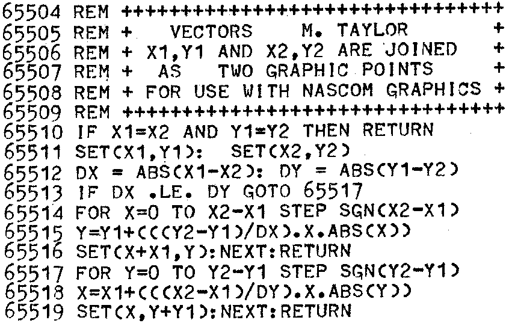
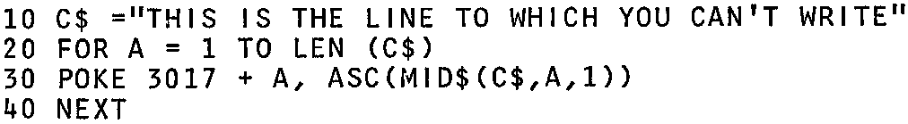

INMC 80 News |
June/July/August 1980 · Issue 1 |
| Page 6 of 48 |
|---|
LIST
OK
Ed: Thanks for the Basic subroutine which is very efficient. You don’t need the outer brackets in Lines 65515 and 65518.
We have come across several minor bugs in the Nascom Basic, but luckily none of them have any effect on running programs. The bug you mention is quite annoying, we agree. To be fair to Nascom, this particular bug is, we think, in the 8080/Z80 Microsoft 8K Basic, and was not added by Nascom.
Dear Sir,
I have enjoyed reading the INMC newsletters but would naturally like to see more items for the Nascom 2. Obviously, you can only do this with readers help and I profer my contributions below:–
1. The Nascom suggestion for writing to line 16 is to first write on line 15 and then transfer this to line 16. This does work but gives the appearance that the program has gone wrong – and we all know our programs never do that! The following routine writes a string C$ directly to the top line:–
Working on the assumption that ‘anything POKE can do DOKE can do quicker’ I tried to improve the above, but without success. I found it necessary first to make LEN(C$) exactly divisible by 2 and then to format the ASCII codes of the two characters currently being dealt with by first reversing them and then converting to a single decimal number. Having provided the approach to steer well clear of I await suggestions from my peers.
| Page 6 of 48 |
|---|